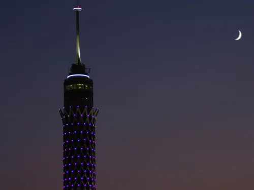
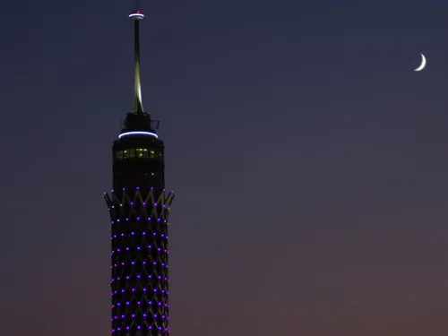
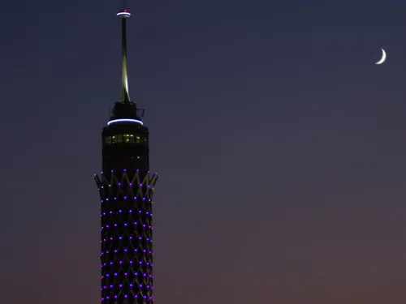
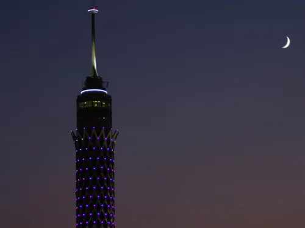

.webp) 



La Tour du Caire est une tour de télécommunications située sur l'île de Gezira dans le Nil, au cœur de la capitale égyptienne. Haute de 187 mètres, elle offre une vue panoramique exceptionnelle sur toute la ville et ses environs.
Construite entre 1956 et 1961, sa conception s'inspire du lotus, une fleur emblématique de l'Égypte ancienne. La tour abrite un restaurant tournant à son sommet, permettant aux visiteurs de profiter d'un repas avec une vue à 360° sur Le Caire.
Symbole de modernité, la Tour du Caire représente un mélange unique entre l'architecture contemporaine et les motifs traditionnels égyptiens.
La construction de la tour a été initiée sous le régime de Nasser et financée par les États-Unis dans le cadre d'un programme d'aide, bien que cette origine ait été longtemps cachée. Elle a été inaugurée en 1961.
Pendant plusieurs décennies, la tour a été la structure la plus haute d'Afrique et du Moyen-Orient. Elle a servi de symbole de la modernisation de l'Égypte au XXe siècle.
En 2006, la tour a subi une importante rénovation qui a modernisé ses équipements tout en préservant son architecture caractéristique.